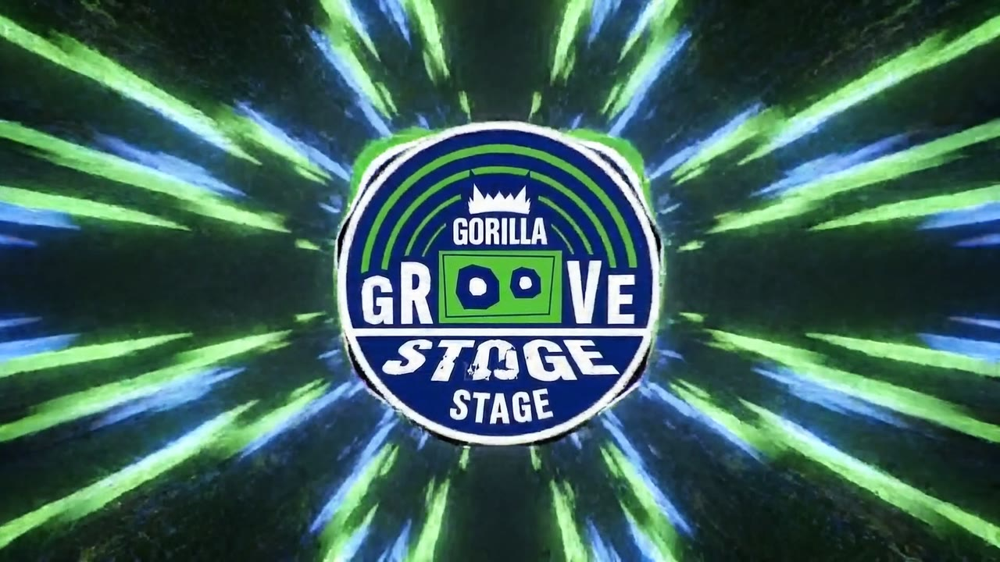
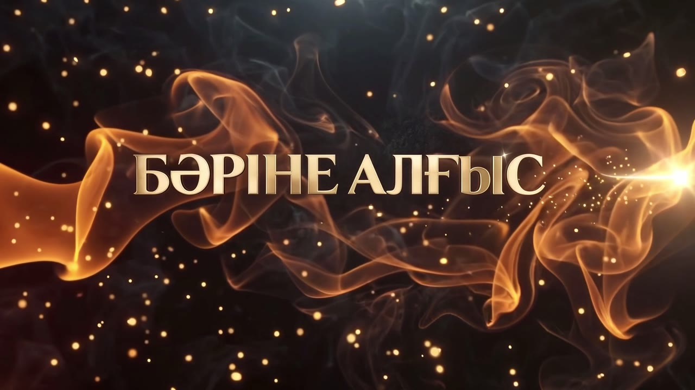
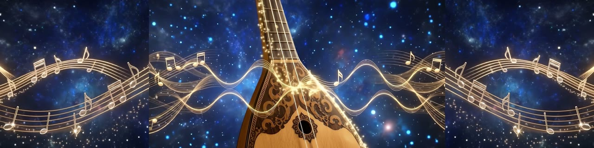
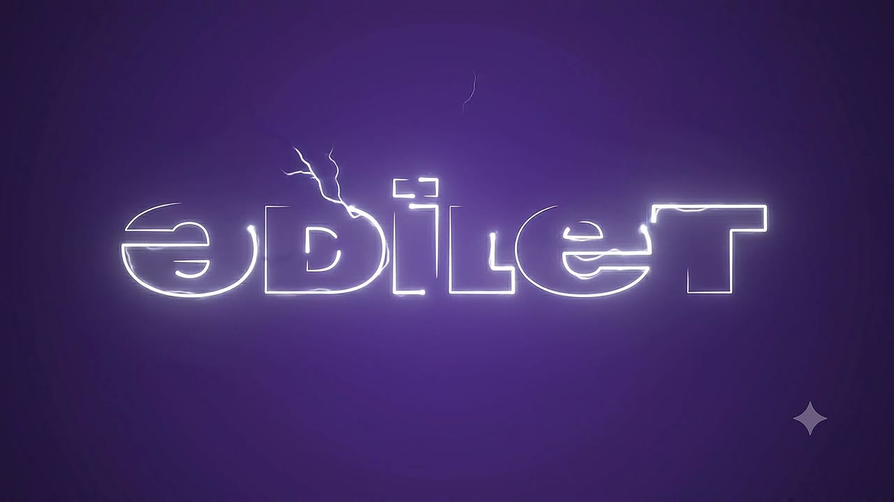

Идеи в движении
Видео, CGI и анимация
Фильмы о брендах и местах, компьютерная графика, AI-видео и анимация логотипов. Полные фильмы — на YouTube-канале ↗
 CGI / шоурил · 4:14
CGI / шоурил · 4:14CGI Showreel
Демонстрационный ролик с работами в компьютерной графике. Подборка CGI-проектов 2021 года.
 AI-фильм · 3:20
AI-фильм · 3:20Костанай будущего
Визуальная история о Костанайском регионе: промышленность, сельское хозяйство и образ будущего. Фильм с использованием генеративного видео.
 Фильм о бренде · 2:24
Фильм о бренде · 2:24Ankor — Наследие
Ролик «Анкор — Опора для здоровья. Наследие». Видеоработа о бренде Ankor; в портфолио также представлен редизайн его сайта.

Сценическая анимация · 0:10Gorilla Groove Stage
Анимация логотипа для экранов: неоновые линии, световые импульсы и движение вокруг знака Gorilla Groove Stage.

Анимация для экранов · 0:16Rose — золотая типографика
Золотые буквы, световые частицы и текучий дым. Один из анимационных фрагментов проекта Rose.

Панорамная анимация · 0:18Юрта — Домбра
Панорамная композиция с домброй и музыкальными линиями. Визуал из проекта «Юрта», созданный для широкого экрана с пропорциями 4:1.

Анимация логотипа · 0:10Adilet — появление логотипа
Свет рисует контуры букв, затем собирает цельный знак. Короткая заставка с логотипом Adilet на фиолетовом фоне.
 Презентационный фильм · 3:35
Презентационный фильм · 3:35Этно-центр Nomad
Видеопрезентация этно-центра Nomad. Работа из авторского YouTube-канала.